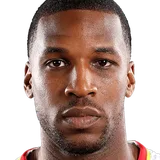

His best final NBA finish was #4 of 30, with the 2019-20 Denver Nuggets. In his 679 games for 4 teams over 11 seasons they went 364–315 (53.6%), +49 games over .500, with an average final finish of 13.0. The biggest one-season rise in his career: the Portland Trail Blazers went from #21 in 2012-13 to #6 in 2013-14.
Jump to: Record by opponent · Season by season · Teammate help
Compare Will Barton with…
Suggested, same era and similar teammate help:


Final NBA finish, season by season
Title Finals Other playoffs Missed playoffs. #1 = champion; the dashed line is last place that season. Each point opens that season's final standings.
All 30 teams ranked in 2019-20, his best finish (#4)Teammate help
 Nikola Jokic31.25 seasons
Nikola Jokic31.25 seasons LaMarcus Aldridge8.03 seasons
LaMarcus Aldridge8.03 seasons Damian Lillard4.83 seasons
Damian Lillard4.83 seasons
Seasons with help 3.0 to 5.0 (3): best finish #4 of 30, 2019-20, worst #10 of 30, 2014-15.
Career
Career records (W–L, W − L, with and without) include 2026-27 games through Nov. 19, 2026; season counts and finishes are through 2025-26. Each card opens its board in the same scope. How we count.

Latest completed seasons
- 2022-23·
 Washington·#23 of 3035–47 · Missed playoffs
Washington·#23 of 3035–47 · Missed playoffs - 2021-22·
 Denver·#10 of 3048–34 · Lost in the first round 1–4 to
Denver·#10 of 3048–34 · Lost in the first round 1–4 to  Golden State
Golden State - 2020-21·Denver·#8 of 3047–25 · Lost in the conference semifinals 0–4 to
 Phoenix
Phoenix
Season by season
Newest first; every header sorts. Final NBA finish is the team's rank among all teams that season (#1 = champion) and opens that season's standings. "Without him" uses the team-season window; the span line counts only the games between his first and last game for the team.
| 2022-23 | #23 of 30 | 35–47 42.7% | Missed playoffs | 40 of 82 | 18–22 45.0% | 10–10 50.0%span: 7–7, gap −5.0 | −5.0 | |
| 2022-23 | #18 of 30 | 41–41 50.0% | Lost in play-in | 16 of 82 | 9–7 56.2% | 6–4 60.0%span: 2–2, gap +6.2 | −3.7 | |
| 2021-22 | #10 of 30 | 48–34 58.5% | Lost 1st round 1–4 | 71 of 82 | 41–30 57.7% | 7–4 63.6%span: 7–3, gap −12.3 | −5.9 | |
| 2020-21 | #8 of 30 | 47–25 65.3% | Lost conf semis 0–4 | 56 of 72 | 37–19 66.1% | 10–6 62.5%span: 1–2, gap +32.7 | +3.6 | |
| 2019-20 | #4 of 30 | 46–27 63.0% | Lost conf finals 1–4 | 58 of 73 | 38–20 65.5% | 8–7 53.3%span: 5–2, gap −5.9 | +12.2 | |
| 2018-19 | #5 of 30 | 54–28 65.9% | Lost conf semis 3–4 | 43 of 82 | 27–16 62.8% | 27–12 69.2%span: 27–12, gap −6.4 | −6.4 | |
| 2017-18 | #17 of 30 | 46–36 56.1% | Missed playoffs | 81 of 82 | 46–35 56.8% | 0–1 0.0%span: 0–1, gap +56.8 | +56.8 | |
| 2016-17 | #18 of 30 | 40–42 48.8% | Missed playoffs | 60 of 82 | 31–29 51.7% | 9–13 40.9%span: 4–10, gap +23.1 | +10.8 | |
| 2015-16 | #21 of 30 | 33–49 40.2% | Missed playoffs | 82 of 82 | 33–49 40.2% | N/A | N/A | |
| 2014-15 | #10 of 30 | 51–31 62.2% | Lost 1st round 1–4 | 30 of 82 | 20–10 66.7% | 16–8 66.7%span: 16–7, gap −2.9 | 0.0 | |
| 2014-15 | #24 of 30 | 30–52 36.6% | Missed playoffs | 28 of 82 | 10–18 35.7% | 0–1 0.0%span: N/A, gap N/A | +35.7 | |
| 2013-14 | #6 of 30 | 54–28 65.9% | Lost conf semis 1–4 | 41 of 82 | 27–14 65.9% | 27–14 65.9%span: 27–13, gap −1.6 | 0.0 | |
| 2012-13 | #21 of 30 | 33–49 40.2% | Missed playoffs | 73 of 82 | 27–46 37.0% | 6–3 66.7%span: 5–3, gap −25.5 | −29.7 |
On/off, starts and close games
From the lineup data, 1996-97 on. On/off is net points per 100 possessions with him on the floor minus off, a different unit from the win-rate gaps. Started and off the bench are team records in those games; close games are those within 5 points in the last 5 minutes with him on the floor.
| 2022-23 | −11.6 | N/A | 18–22 45.0% | 1–3 25.0% | |
| 2022-23 | −15.7 | 1–1 50.0% | 8–6 57.1% | 0–1 0.0% | |
| 2021-22 | −0.5 | 41–30 57.7% | N/A | 19–13 59.4% | |
| 2020-21 | +2.9 | 36–16 69.2% | 1–3 25.0% | 15–7 68.2% | |
| 2019-20 | +7.6 | 38–20 65.5% | N/A | 20–13 60.6% | |
| 2018-19 | −5.7 | 25–13 65.8% | 2–3 40.0% | 10–6 62.5% | |
| 2017-18 | +1.0 | 25–15 62.5% | 21–20 51.2% | 22–20 52.4% | |
| 2016-17 | −7.5 | 9–10 47.4% | 22–19 53.7% | 7–12 36.8% | |
| 2015-16 | +0.8 | 0–1 0.0% | 33–48 40.7% | 20–21 48.8% | |
| 2014-15 | −10.7 | N/A | 20–10 66.7% | 3–0 100.0% | |
| 2014-15 | +4.4 | N/A | 10–18 35.7% | 1–6 14.3% | |
| 2013-14 | −9.9 | N/A | 27–14 65.9% | 1–1 50.0% | |
| 2012-13 | −10.5 | 0–5 0.0% | 27–41 39.7% | 1–5 16.7% |
Teammate help by season
Two separate numbers per season, each with every teammate that adds to it. Help this season = Teammates Score points for honors won that season by teammates who shared a game with him. Help coming in = the same teammates' honors from the season before. How help works.
- 2022-23WashingtonHelp this season: 0, no honored teammate
- 2022-23
 Toronto
Toronto
 Pascal Siakam All-Star115 g
Pascal Siakam All-Star115 g OG Anunoby All-Def 2nd0.515 g
OG Anunoby All-Def 2nd0.515 g
Help this season: 1.5 = 1 Pascal Siakam + 0.5 OG Anunoby
More: help coming in and other teammates
Help coming in (teammates' honors the season before): 3.75 = 2 Pascal Siakam + 1 Fred VanVleet + 0.75 Scottie Barnes
Other teammates (no honors that season): Chris Boucher 16 g, Jakob Poeltl 16 g, Fred VanVleet 15 g, Scottie Barnes 14 g, Precious Achiuwa 13 g, Gary Trent Jr 12 g, Christian Koloko 10 g, Malachi Flynn 9 g, Joe Wieskamp 5 g, Thaddeus Young 4 g, Ron Harper Jr 4 g, Jeff Dowtin 4 g, Dalano Banton 3 g
- 2021-22Denver
Nikola Jokic MVPAll-NBA 1stAll-Star1164 g
 Bones Hyland All-Rookie 2nd0.12559 g
Bones Hyland All-Rookie 2nd0.12559 g
Help this season: 11.125 = 11 Nikola Jokic + 0.125 Bones Hyland
More: help coming in and other teammates
Help coming in (teammates' honors the season before): 11 = 11 Nikola Jokic
Other teammates (no honors that season): Aaron Gordon 65 g, Jeff Green 65 g, Monte Morris 65 g, JaMychal Green 58 g, Austin Rivers 58 g, Facundo Campazzo 54 g, Davon Reed 39 g, Zeke Nnaji 33 g, Bryn Forbes 29 g, DeMarcus Cousins 25 g, Markus Howard 25 g, PJ Dozier 16 g, Bol Bol 12 g, Vlatko Cancar 12 g and 5 more
- 2020-21Denver
Nikola Jokic MVPAll-NBA 1stAll-Star1156 g
Help this season: 11 = 11 Nikola Jokic
More: help coming in and other teammates
Help coming in (teammates' honors the season before): 4 = 4 Nikola Jokic
Other teammates (no honors that season): Facundo Campazzo 50 g, Paul Millsap 46 g, Michael Porter 46 g, Jamal Murray 45 g, PJ Dozier 44 g, JaMychal Green 43 g, Monte Morris 42 g, Zeke Nnaji 34 g, Vlatko Cancar 30 g, Isaiah Hartenstein 27 g, Markus Howard 26 g, Bol Bol 25 g, RJ Hampton 22 g, Gary Harris 18 g and 6 more
- 2019-20Denver
Nikola Jokic All-NBA 2ndAll-Star458 g
Help this season: 4 = 4 Nikola Jokic
More: help coming in and other teammates
Help coming in (teammates' honors the season before): 5 = 5 Nikola Jokic
Other teammates (no honors that season): Jerami Grant 58 g, Monte Morris 58 g, Mason Plumlee 50 g, Gary Harris 49 g, Jamal Murray 48 g, Michael Porter 45 g, Torrey Craig 43 g, Paul Millsap 39 g, Malik Beasley 38 g, Juan Hernangomez 31 g, PJ Dozier 17 g, Vlatko Cancar 12 g, Jarred Vanderbilt 8 g, Noah Vonleh 3 g and 2 more
- 2018-19Denver
Nikola Jokic All-NBA 1stAll-Star541 g
Help this season: 5 = 5 Nikola Jokic
More: help coming in and other teammates
Help coming in (teammates' honors the season before): 0
Other teammates (no honors that season): Mason Plumlee 43 g, Monte Morris 43 g, Malik Beasley 42 g, Torrey Craig 40 g, Paul Millsap 39 g, Jamal Murray 36 g, Gary Harris 33 g, Juan Hernangomez 32 g, Trey Lyles 24 g, Jarred Vanderbilt 17 g, Isaiah Thomas 12 g, Tyler Lydon 12 g, Brandon Goodwin 7 g, Thomas Welsh 5 g
- 2017-18DenverHelp this season: 0, no honored teammate
More: help coming in
Help coming in (teammates' honors the season before): 1.125 = 1 Paul Millsap + 0.125 Jamal Murray
- 2016-17Denver
 Jamal Murray All-Rookie 2nd0.12560 g
Jamal Murray All-Rookie 2nd0.12560 g
Help this season: 0.125 = 0.125 Jamal Murray
More: help coming in and other teammates
Help coming in (teammates' honors the season before): 0.375 = 0.25 Nikola Jokic + 0.125 Emmanuel Mudiay
Other teammates (no honors that season): Jameer Nelson 59 g, Nikola Jokic 53 g, Wilson Chandler 52 g, Danilo Gallinari 45 g, Gary Harris 43 g, Juan Hernangomez 43 g, Kenneth Faried 42 g, Emmanuel Mudiay 37 g, Darrell Arthur 33 g, Jusuf Nurkic 31 g, Mason Plumlee 19 g, Mike Miller 13 g, Malik Beasley 12 g, Alonzo Gee 8 g and 2 more
- 2015-16Denver
Nikola Jokic All-Rookie 1st0.2580 g
 Emmanuel Mudiay All-Rookie 2nd0.12568 g
Emmanuel Mudiay All-Rookie 2nd0.12568 g
Help this season: 0.375 = 0.25 Nikola Jokic + 0.125 Emmanuel Mudiay
More: help coming in and other teammates
Help coming in (teammates' honors the season before): 0.125 = 0.125 Jusuf Nurkic
Other teammates (no honors that season): Gary Harris 76 g, Darrell Arthur 70 g, Kenneth Faried 67 g, Joffrey Lauvergne 59 g, Randy Foye 54 g, Danilo Gallinari 53 g, Mike Miller 47 g, Jameer Nelson 39 g, Jusuf Nurkic 32 g, DJ Augustin 28 g, JaKarr Sampson 26 g, Kostas Papanikolaou 26 g, Axel Toupane 21 g, JJ Hickson 20 g and 2 more
- 2014-15
 Portland
LaMarcus Aldridge All-NBA 2ndAll-Star424 gDamian Lillard All-Star130 g
Portland
LaMarcus Aldridge All-NBA 2ndAll-Star424 gDamian Lillard All-Star130 g
Help this season: 5 = 4 LaMarcus Aldridge + 1 Damian Lillard
More: help coming in and other teammates
Help coming in (teammates' honors the season before): 6 = 3 Damian Lillard + 3 LaMarcus Aldridge
Other teammates (no honors that season): Steve Blake 30 g, Wesley Matthews 30 g, Chris Kaman 27 g, Nicolas Batum 26 g, CJ McCollum 25 g, Meyers Leonard 24 g, Thomas Robinson 24 g, Allen Crabbe 19 g, Dorell Wright 17 g, Robin Lopez 16 g, Joel Freeland 14 g, Victor Claver 10 g
- 2014-15Denver
 Jusuf Nurkic All-Rookie 2nd0.12520 g
Jusuf Nurkic All-Rookie 2nd0.12520 g
Help this season: 0.125 = 0.125 Jusuf Nurkic
More: help coming in and other teammates
Help coming in (teammates' honors the season before): 0
Other teammates (no honors that season): Gary Harris 28 g, JJ Hickson 27 g, Kenneth Faried 25 g, Wilson Chandler 25 g, Randy Foye 25 g, Joffrey Lauvergne 24 g, Erick Green 24 g, Ty Lawson 24 g, Danilo Gallinari 23 g, Jameer Nelson 22 g, Darrell Arthur 13 g, Ian Clark 7 g, Jamaal Franklin 3 g
- 2013-14Portland
Damian Lillard All-NBA 3rdAll-Star341 gLaMarcus Aldridge All-NBA 3rdAll-Star329 g
Help this season: 6 = 3 Damian Lillard + 3 LaMarcus Aldridge
More: help coming in and other teammates
Help coming in (teammates' honors the season before): 1.75 = 1 LaMarcus Aldridge + 0.75 Damian Lillard
Other teammates (no honors that season): Wesley Matthews 41 g, Nicolas Batum 41 g, Robin Lopez 41 g, Thomas Robinson 37 g, Maurice Williams 36 g, Dorell Wright 35 g, Meyers Leonard 28 g, CJ McCollum 24 g, Victor Claver 20 g, Earl Watson 19 g, Joel Freeland 16 g, Allen Crabbe 15 g
- 2012-13Portland
LaMarcus Aldridge All-Star166 gDamian Lillard ROYAll-Rookie 1st0.7573 g
Help this season: 1.75 = 1 LaMarcus Aldridge + 0.75 Damian Lillard
More: help coming in and other teammates
Help coming in (teammates' honors the season before): 1 = 1 LaMarcus Aldridge
Other teammates (no honors that season): JJ Hickson 71 g, Meyers Leonard 64 g, Nicolas Batum 64 g, Wesley Matthews 60 g, Luke Babbitt 55 g, Joel Freeland 44 g, Victor Claver 43 g, Nolan Smith 36 g, Aleksandar Pavlovic 33 g, Ronnie Price 32 g, Jared Jeffries 31 g, Eric Maynor 26 g
Record against each opponent
- Best regular-season record against one franchise: 23–9 (71.9%) against the Minnesota Timberwolves in 32 games.
- Toughest regular-season record against one franchise: 10–19 (34.5%) against the Golden State Warriors in 29 games.
- Most playoff series against one franchise: 2 against the San Antonio Spurs, 1–1 in series and 5–7 in games.
Regular season, through 2025-26 (2026-27 games not included): 679 games, 364–315, against 30 franchises.
Grouped by franchise (named as today); game lists keep each team's name that season. Filters and the tab are kept in the URL, so a filtered view can be shared.
| Games list | |||||||
|---|---|---|---|---|---|---|---|
| 33 | 12–21 | 36.4% | −9 | N/A | 2012-13 to 2022-23 | ||
| 32 | 23–9 | 71.9% | +14 | N/A | 2012-13 to 2022-23 | ||
| 30 | 14–16 | 46.7% | −2 | 1–0 (1–1 in games) | 2012-13 to 2022-23 | ||
| 30 | 13–17 | 43.3% | −4 | N/A | 2012-13 to 2022-23 | ||
| 30 | 17–13 | 56.7% | +4 | 0–1 (0–3 in games) | 2012-13 to 2022-23 | ||
| 29 | 14–15 | 48.3% | −1 | N/A | 2012-13 to 2022-23 | ||
| 29 | 10–19 | 34.5% | −9 | 0–1 (1–4 in games) | 2012-13 to 2021-22 | ||
| 29 | 13–16 | 44.8% | −3 | N/A | 2012-13 to 2022-23 | ||
| 28 | 14–14 | 50.0% | 0 | N/A | 2012-13 to 2022-23 | ||
| 27 | 15–12 | 55.6% | +3 | N/A | 2012-13 to 2021-22 | ||
| 27 | 10–17 | 37.0% | −7 | 1–1 (5–7 in games) | 2012-13 to 2021-22 | ||
| 26 | 14–12 | 53.8% | +2 | N/A | 2012-13 to 2022-23 | ||
| 26 | 15–11 | 57.7% | +4 | N/A | 2012-13 to 2021-22 | ||
| 23 | 14–9 | 60.9% | +5 | 0–1 (3–4 in games) | 2014-15 to 2021-22 | ||
| 22 | 13–9 | 59.1% | +4 | N/A | 2012-13 to 2022-23 | ||
| 21 | 13–8 | 61.9% | +5 | N/A | 2012-13 to 2022-23 | ||
| 20 | 8–12 | 40.0% | −4 | N/A | 2012-13 to 2022-23 | ||
| 19 | 14–5 | 73.7% | +9 | N/A | 2012-13 to 2022-23 | ||
| 19 | 7–12 | 36.8% | −5 | N/A | 2012-13 to 2022-23 | ||
| 19 | 12–7 | 63.2% | +5 | N/A | 2012-13 to 2022-23 | ||
| 19 | 10–9 | 52.6% | +1 | N/A | 2012-13 to 2022-23 | ||
| 18 | 9–9 | 50.0% | 0 | N/A | 2012-13 to 2021-22 | ||
| 18 | 5–13 | 27.8% | −8 | N/A | 2012-13 to 2022-23 | ||
| 18 | 14–4 | 77.8% | +10 | N/A | 2012-13 to 2022-23 | ||
| 17 | 16–1 | 94.1% | +15 | N/A | 2012-13 to 2021-22 | ||
| 17 | 12–5 | 70.6% | +7 | N/A | 2012-13 to 2022-23 | ||
| 16 | 9–7 | 56.2% | +2 | N/A | 2013-14 to 2022-23 | ||
| 14 | 11–3 | 78.6% | +8 | N/A | 2012-13 to 2022-23 | ||
| 12 | 7–5 | 58.3% | +2 | N/A | 2012-13 to 2022-23 | ||
| 11 | 6–5 | 54.5% | +1 | N/A | 2012-13 to 2021-22 |
Rows add up to his career record in his games. A playoff series counts when he played in it; early round-robin games show as games only. How we count.
Playoffs, with and without him
| 2021-22 | Lost in the first round 1–4 to | #10 of 30 | 5 of 5 | 1–4 20.0% | N/A | N/A | |
| 2020-21 | Lost in the conference semifinals 0–4 to | #8 of 30 | 3 of 10 | 0–3 0.0% | 4–3 57.1% | −57.1 | |
| 2018-19 | Lost in the conference semifinals 3–4 to | #5 of 30 | 14 of 14 | 7–7 50.0% | N/A | N/A | |
| 2013-14 | Lost in the conference semifinals 1–4 to | #6 of 30 | 7 of 11 | 2–5 28.6% | 3–1 75.0% | −46.4 |
Arrival and departure
Team wins per 82 games the season before he arrived vs his first season there, and his last season vs the season after he left. He leaves a team only when his next season with games is for another team (or he never plays again); whole seasons he missed and came back from are one "Missed" row with the team's record without him. Per 82 so short seasons compare fairly. These are team records, not a measure of what he did.
| Left | after 2022-23 | 2022-23: 35–47 35.0 per 82 | 2023-24: 15–67 15.0 per 82 without him | −20.0 wins | |
| Left | after 2022-23 | 2022-23: 41–41 41.0 per 82 | 2023-24: 25–57 25.0 per 82 without him | −16.0 wins | |
| Arrived | 2022-23 | 2021-22: 35–47 35.0 per 82 | 2022-23: 35–47 35.0 per 82 | +0.0 wins | |
| Arrived | 2022-23 | 2021-22: 48–34 48.0 per 82 | 2022-23: 41–41 41.0 per 82 | −7.0 wins | |
| Left | after 2021-22 | 2021-22: 48–34 48.0 per 82 | 2022-23: 53–29 53.0 per 82 without him | +5.0 wins | |
| Left | after 2014-15 | 2014-15: 51–31 51.0 per 82 | 2015-16: 44–38 44.0 per 82 without him | −7.0 wins | |
| Arrived | 2014-15 | 2013-14: 36–46 36.0 per 82 | 2014-15: 30–52 30.0 per 82 | −6.0 wins | |
| Debut | 2012-13 | 2011-12: 28–38 34.8 per 82 | 2012-13: 33–49 33.0 per 82 | −1.8 wins |
Seasons split between teams
Each team's record before his first game for it, inside his window (games with and without him) and after his last game, in the seasons he played for two or more teams.
| 2022-23 | Oct. 19, 2022 to Feb. 8, 2023 | N/A | 28–32 46.7% | 7–15 31.8% | 40 | |
| 2022-23 | Feb. 28, 2023 to April 9, 2023 | 26–30 46.4% | 15–11 57.7% | N/A | 16 | |
| 2014-15 | Oct. 29, 2014 to Feb. 11, 2015 | N/A | 36–18 66.7% | 15–13 53.6% | 30 | |
| 2014-15 | Feb. 22, 2015 to April 15, 2015 | 20–33 37.7% | 10–19 34.5% | N/A | 28 |
Best duos
Team record in regular-season games both played, top 10 by win %, at least 50 games together.
 Robin Lopez
40–17 70.2%
Robin Lopez
40–17 70.2%- Dorell Wright 35–17 67.3%
 Michael Porter
67–33 67.0%
Michael Porter
67–33 67.0% PJ Dozier
51–26 66.2%
PJ Dozier
51–26 66.2%
Thomas Robinson 40–21 65.6% Jerami Grant
38–20 65.5%
Jerami Grant
38–20 65.5% Zeke Nnaji
43–24 64.2%
Zeke Nnaji
43–24 64.2% Paul Millsap
103–59 63.6%
Paul Millsap
103–59 63.6% Aaron Gordon
50–29 63.3%
Aaron Gordon
50–29 63.3% Facundo Campazzo
65–39 62.5%
Facundo Campazzo
65–39 62.5%